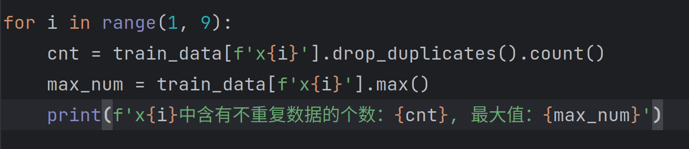
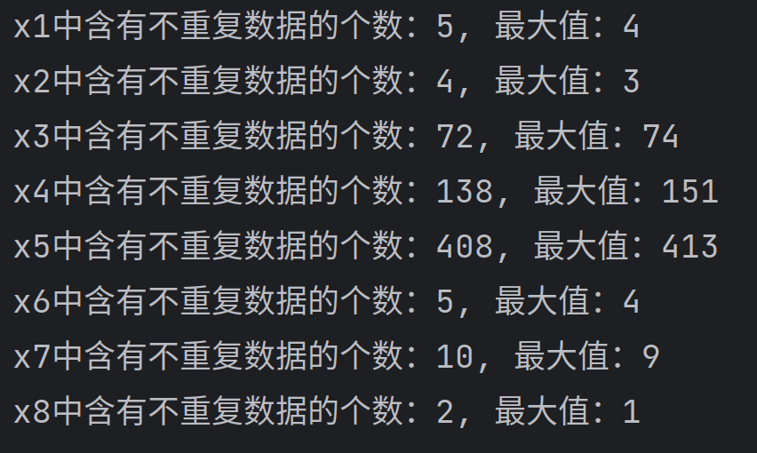
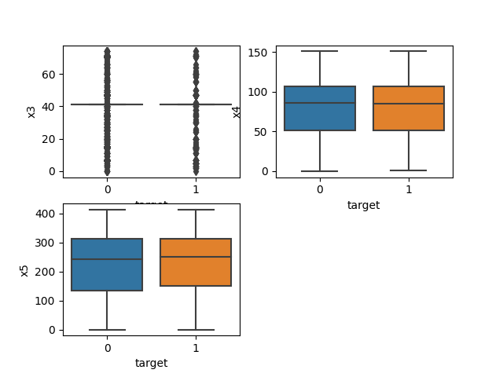
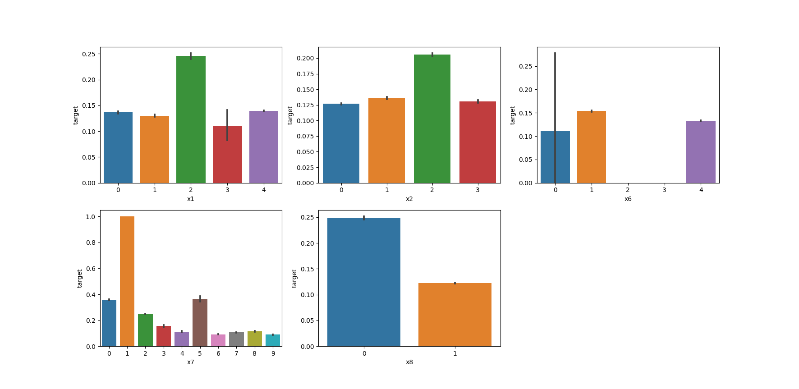
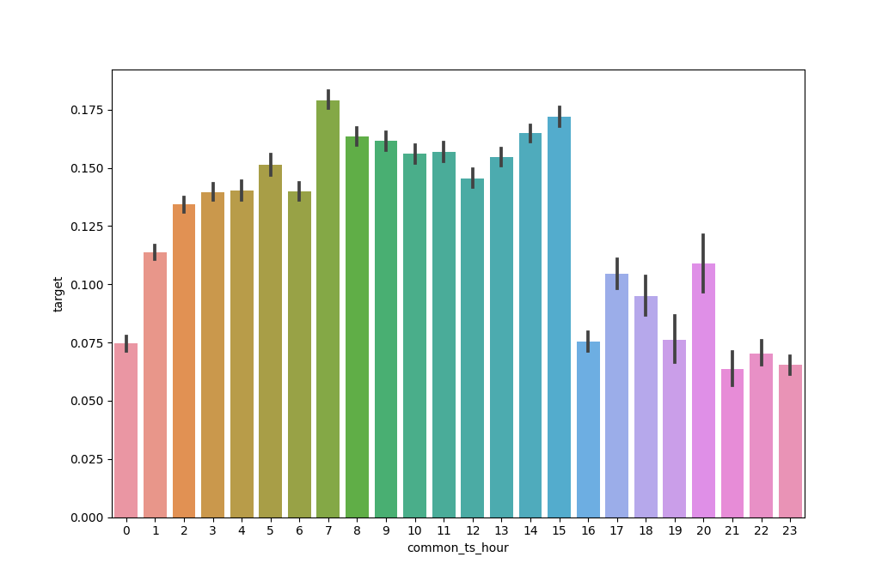
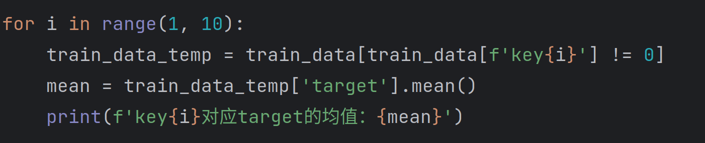
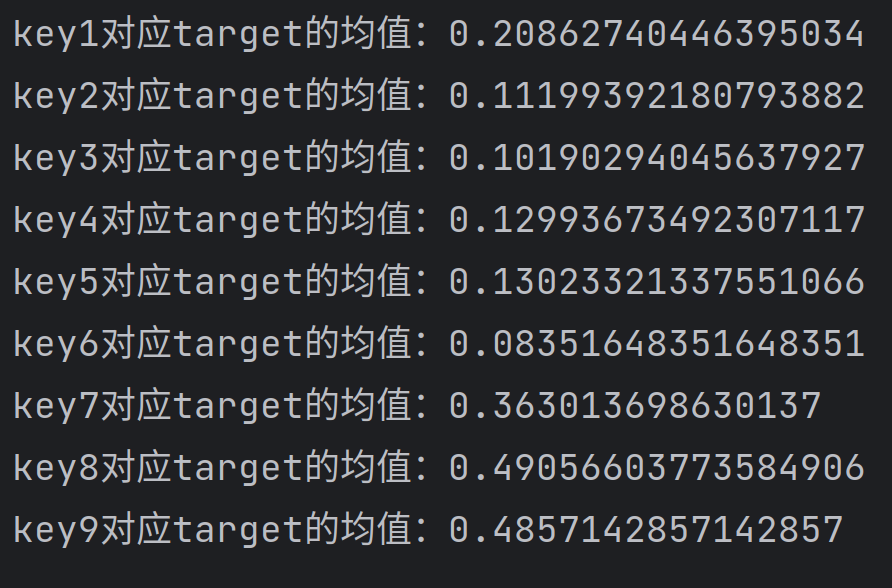

task2.1：数据分析与可视化
1.分析字段x1至x8
让我们先来看看x1到x8中每一列包含多少不重复数据的个数以及它的最大值，以此来判断该字段是数值类型还是类别类型。因为如果是类别类型，大概率是从零开始的连续数列，显然它的最大值是不会超过对应的不重复数据的个数。


从输出结果来看，我们可以大胆地认为x3、x4和x5是数值类型，其余的为类别类型。
接下来我们对数值类型画箱线图，对类别类型画条形图。


接下来分析图表，对x3画箱线图的输出有点奇怪，查看原始数据后发现x3的大部分数据都是41。还有，对于x7，如果数值是1，对应的target几乎都是1，这个特征还挺有趣的，可以着重关注一下。
2.分析common_ts
我们先从common_ts中提取出小时信息，然后对每个小时中的标签分布绘制条形图。

可以看出新增用户出现在白天的概率较高。
3.分析udmap
task1中我们已经对udmap进行了onehot处理。对每一个key求对应标签的均值。


可以看出key7、key8和key9对于target的均值较大。
接下来绘制每个key的直方图，来更加清晰地显示key与target之间的关系。
task2.2：模型交叉验证
…
task2.3：特征工程
…